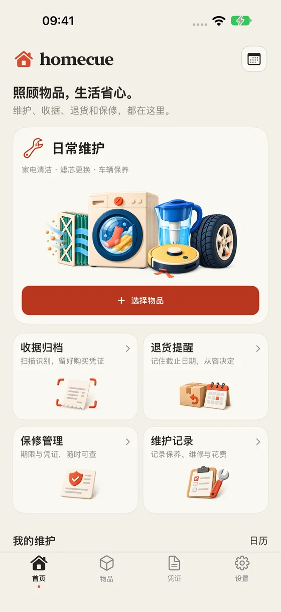
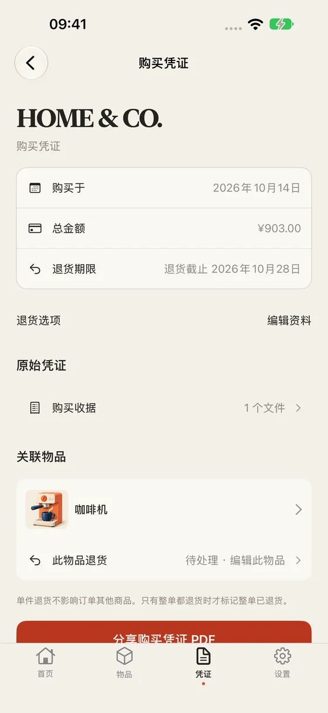

按日期或里程安排维护
可按日期、里程或先到的一项规划维护。具体保养间隔请参考设备或车辆厂商的说明。
iPhone 与 iPad · iOS 17 或更高版本
把收据归到对应物品，设置退货提醒，按日期或里程安排家电和车辆保养。
记录和收据文字识别均在本机处理。

从 48 个插画模板任选其一，再核对适用于你设备的资料和维护事项。
可按日期、里程或先到的一项规划维护。具体保养间隔请参考设备或车辆厂商的说明。
可扫描多页，或添加图片、PDF。在本机识别文字，一张收据也能关联多件物品。
设置退货提醒，记下部分退货，并把保修日期、说明书和维修历史保存在同一处。
打开对应物品即可查看收据、退货截止日和维护历史。保留原始凭证，也能随时查看自己核对过的资料。

可以选里程条件，或同时设置日期。更新当前里程后，HomeCue 能据此显示离下次保养还有多远。
可以关联多件物品，并分别记录退货。
记录保存在本机，可通过备份导出和恢复。当前价格和解锁方式请查看所在地区的 App Store。